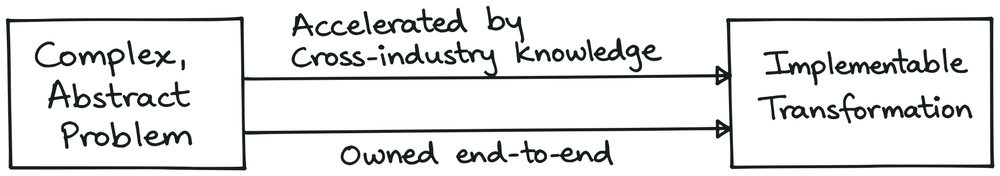

For consulting or fractional work
Faster than a hire can ramp.

Transformation rarely breaks on the strategy. It breaks in translating and executing it.
What you get from the first week
I get to the real problem fast.
5 industries
Travel, loyalty, banking procurement, media & entertainment, and enterprise software. Patterns from one sector shorten the discovery in the next.
I own it end to end, not just the deck.
12 months
Took a CEO’s 8-page concept to a commercially launched B2B2C product as a two-person team. My consulting work has always come with implementation attached.
I move people I don’t manage.
3 months
Piloted a 12-person procure-to-pay contact centre across 5 live branches at Standard Bank South Africa, as a contractor with no formal authority. It later rolled out nationally.
Product Management: from my perspective

Synchronize wraps around both - continuous alignment, not a third step
Next step
Tell me the problem. I’ll tell you honestly if I’m the right fit.
Open for fractional product leadership
0→1 strategy | Product-to-platform thinking | VP-level judgement, without a full-time hire | Discovery and framing | Go-to-market strategy | AI product advisory
For: founders, SMEs, transformation teams.
Skill map
Self-rated, grouped by the beat of Shape-Ship-Synchronize each skill serves.
Show the mapHide
Skill map
Self-rated, grouped by the beat of Shape-Ship-Synchronize each skill serves.
Shape
Make sense of the abstract
Problem discovery & framing
0→1 / greenfield product
Customer & market research
Business case & GTM strategy
Framework invention
Ship
Work through the chaos
Requirements & BA craft
Backlog & delivery leadership
Platform / cloud migration
Agile product management
Hands-on AI / RAG build
Synchronize
Align across functions
Stakeholder management
Influence without authority
Executive buy-in & funding
Change management
Coaching & mentoring
FullHalfNot yetSelf-rated, out of five.
In their words
We can tell him 'what needs to be achieved' and he will figure out HOW and WHY. He is a great asset for any problem solving company and extremely dependable.
The more we see, the less we speak. The less we speak, the more we listen. The more we listen, the more we learn.
Gaurav Joshi